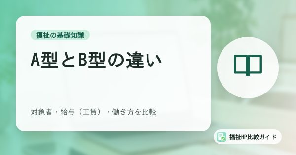
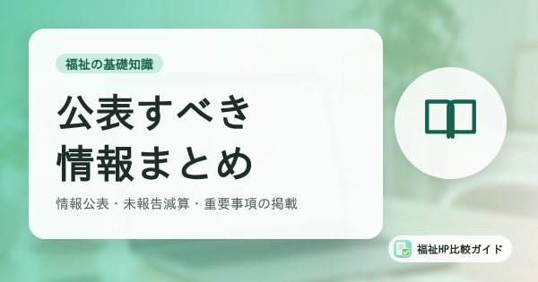
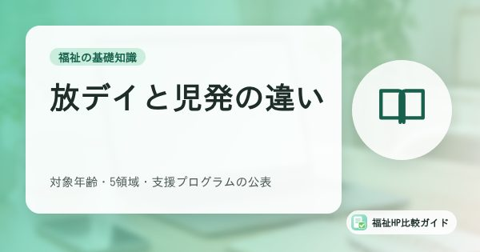
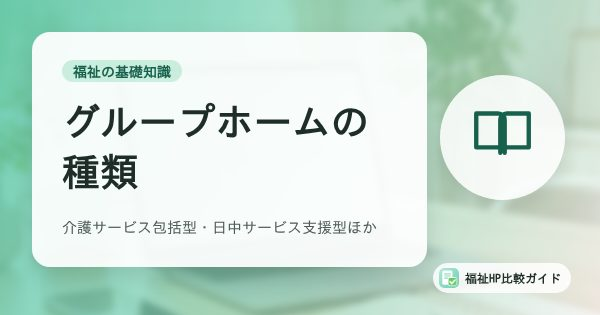
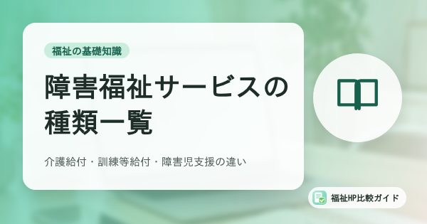
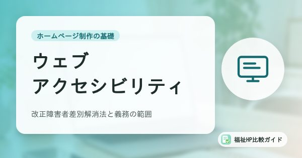
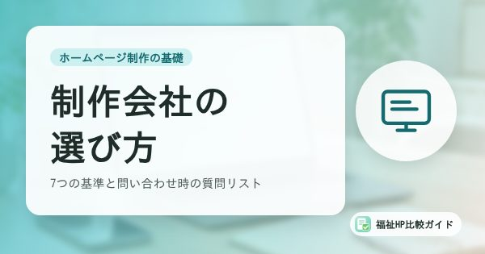

福祉事業所のホームページお役立ち記事
障害福祉の基礎知識から、ホームページ制作の費用・選び方、サイバー攻撃への備え、集客・採用まで。福祉事業所の運営者・担当者の方に向けて、公的機関の資料などをもとに編集部がわかりやすく解説します。
新着記事
 福祉の基礎知識
福祉の基礎知識
生活介護とは？対象者（障害支援区分）・支援内容・利用料と、2024年度改定の時間区分
障害者総合支援法の生活介護について、対象となる障害支援区分（区分3以上、50歳以上は区分2以上）、日中の支援内容、利用料と実費、2024年度報酬改定で導入されたサービス提供時間ごとの基本報酬までわかりやすく解説します。
記事を読む セキュリティ対策
セキュリティ対策
ランサムウェア対策のバックアップ入門｜福祉事業所の記録データを守る3-2-1ルールと復元テスト
ランサムウェア被害ではバックアップも暗号化され、復元できない例が多いと警察庁の調査が示しています。福祉事業所の記録や請求データを守るため、3-2-1ルール、オフライン保管、復元テストの考え方をチェックリスト付きで解説します。
記事を読む 集客・採用・運用
集客・採用・運用
福祉事業所の採用ページ設計｜処遇改善の見える化とGoogleしごと検索（求人の構造化データ）への対応
福祉事業所の採用ページを、求職者が応募前に確認する情報から逆算して設計する方法を解説。処遇改善加算の取組の見える化、数字で見る職場、職員インタビューの質問例、求人の構造化データによるGoogleしごと検索への掲載、募集終了時の注意まで紹介します。
記事を読む セキュリティ対策
セキュリティ対策
福祉事業所のホームページが狙われている｜2026年のサイバー攻撃の動向と今すぐできる対策
ランサムウェア被害は2026年上半期に過去最多を更新し、WordPress本体の緊急脆弱性「wp2shell」も悪用されました。福祉・介護事業所のホームページが狙われる理由、最近の動向、小規模な事業所でも今すぐできる対策をわかりやすく解説します。
記事を読む 集客・採用・運用
集客・採用・運用
福祉事業所のホームページを地域検索で見つけてもらうSEOの基本｜「◯◯市 B型」で上位を目指す10のポイント
「◯◯市 放課後等デイサービス」「◯◯区 グループホーム」など、地域名とサービス名で検索されたときに福祉事業所のホームページを見つけてもらうためのSEOの基本を10のポイントで解説。タイトルの付け方、ページ構成、Googleマップとの連携、避けるべき手法も紹介します。
記事を読む 集客・採用・運用
集客・採用・運用
Googleビジネスプロフィールのガイドラインと注意点｜福祉事業所がやってはいけない登録・口コミ対応
福祉事業所がGoogleビジネスプロフィール（Googleマップ）を使うときに守るべきガイドラインと注意点を解説。ビジネス名へのキーワード追加の禁止、口コミ返信での個人情報の扱い、グループホームの住所非表示、オーナー確認と管理アカウント、代行営業への注意までまとめました。
記事を読む福祉の基礎知識
福祉の基礎知識の記事一覧 ›障害福祉サービスの種類や制度、報酬改定など、事業所運営とホームページづくりの前提になる基礎知識をまとめています。
福祉の基礎知識
生活介護とは？対象者（障害支援区分）・支援内容・利用料と、2024年度改定の時間区分
障害者総合支援法の生活介護について、対象となる障害支援区分（区分3以上、50歳以上は区分2以上）、日中の支援内容、利用料と実費、2024年度報酬改定で導入されたサービス提供時間ごとの基本報酬までわかりやすく解説します。
記事を読む
福祉の基礎知識就労継続支援A型とB型の違いとは？対象者・給与（工賃）・働き方を比較表で解説
就労継続支援A型とB型の違いを、雇用契約の有無、対象者、賃金・工賃、利用期間、年齢などの観点から比較表で解説。就労移行支援や2025年10月開始の就労選択支援との関係、事業所ホームページで伝えるべきポイントも紹介します。
記事を読む
福祉の基礎知識障害福祉事業所がホームページ等で公表すべき情報まとめ｜情報公表制度・未報告減算・重要事項の掲載
障害福祉サービス等情報公表制度（WAM NET）の未報告減算、児童発達支援・放課後等デイサービスの支援プログラム未公表減算、重要事項のウェブサイト掲載など、障害福祉事業所が公表すべき情報と減算のリスクを一覧で整理します。
記事を読む
福祉の基礎知識放課後等デイサービスと児童発達支援の違い｜対象年齢・支援内容・5領域と支援プログラムの公表
放課後等デイサービスと児童発達支援の違いを、対象年齢・支援内容・利用時間の観点から比較。2024年度報酬改定で義務化された5領域の支援プログラムの公表や、ホームページで公開すべき情報もあわせて解説します。
記事を読む
福祉の基礎知識障害者グループホーム（共同生活援助）の種類と違い｜介護サービス包括型・日中サービス支援型・外部サービス利用型
障害者グループホーム（共同生活援助）の3つの類型「介護サービス包括型」「日中サービス支援型」「外部サービス利用型」とサテライト型住居の違いを解説。地域連携推進会議など近年の制度変更や、入居希望者に伝わるホームページのポイントも紹介します。
記事を読む
福祉の基礎知識障害福祉サービスの種類一覧｜介護給付・訓練等給付・障害児支援の違いをわかりやすく解説
障害者総合支援法と児童福祉法にもとづく障害福祉サービスの種類を一覧で整理。介護給付・訓練等給付・相談支援・障害児通所支援の違いや、2025年10月に始まった就労選択支援まで、事業所運営者向けにわかりやすく解説します。
記事を読むセキュリティ対策
セキュリティ対策の記事一覧 ›ホームページの改ざん・乗っ取り、ランサムウェア、個人情報の漏えいなど、福祉事業所が知っておきたいサイバー攻撃の動向と対策を解説します。
セキュリティ対策
ランサムウェア対策のバックアップ入門｜福祉事業所の記録データを守る3-2-1ルールと復元テスト
ランサムウェア被害ではバックアップも暗号化され、復元できない例が多いと警察庁の調査が示しています。福祉事業所の記録や請求データを守るため、3-2-1ルール、オフライン保管、復元テストの考え方をチェックリスト付きで解説します。
記事を読む
セキュリティ対策
福祉事業所のホームページが狙われている｜2026年のサイバー攻撃の動向と今すぐできる対策
ランサムウェア被害は2026年上半期に過去最多を更新し、WordPress本体の緊急脆弱性「wp2shell」も悪用されました。福祉・介護事業所のホームページが狙われる理由、最近の動向、小規模な事業所でも今すぐできる対策をわかりやすく解説します。
記事を読む セキュリティ対策
セキュリティ対策
ホームページが改ざん・乗っ取りされたときの初動対応マニュアル｜福祉事業所向け
福祉事業所のホームページが改ざん・乗っ取りされた疑いがあるときの初動対応を、気づくサイン、最初の1時間でやること、復旧、個人情報保護委員会への報告、再発防止の流れで解説。連絡先リストのひな形つきです。
記事を読む セキュリティ対策
セキュリティ対策
福祉事業所の問い合わせフォームと個人情報保護｜要配慮個人情報の扱いとプライバシーポリシーの書き方
福祉事業所のホームページに設置する問い合わせ・見学申込みフォームで注意すべき個人情報保護のポイントを解説。要配慮個人情報の取得、SSL化、入力項目の最小化、プライバシーポリシーに書くべき内容、迷惑送信対策までまとめました。
記事を読む セキュリティ対策
セキュリティ対策
WordPressセキュリティ対策チェックリスト｜福祉事業所のホームページを改ざん・乗っ取りから守る20項目
WordPressで作った福祉事業所のホームページを改ざんや乗っ取りから守るためのチェックリスト。更新、ログイン対策、プラグイン管理、バックアップ、サーバー設定、運用体制まで20項目を、専門知識がなくても確認できるよう解説します。
記事を読むホームページ制作の基礎
ホームページ制作の基礎の記事一覧 ›費用相場、載せるべき内容、制作会社の選び方など、福祉事業所がホームページを作るときに役立つ情報をまとめています。

ホームページ制作の基礎改正障害者差別解消法とウェブアクセシビリティ｜福祉事業所が知っておきたい義務の範囲とJIS X 8341-3
2024年4月施行の改正障害者差別解消法で、事業者の合理的配慮の提供が義務化されました。ウェブアクセシビリティは「環境の整備」として努力義務です。義務の範囲、JIS X 8341-3・WCAG 2.2の基準、福祉事業所のホームページでのセルフチェック方法を解説します。
記事を読む ホームページ制作の基礎
ホームページ制作の基礎
ホームページは自作？制作会社に依頼？福祉事業所のための作り方4パターン比較
福祉事業所のホームページを、作成ツールで自作する、WordPressで自作する、制作会社に依頼する、月額定額型サービスを使う、の4パターンで比較。費用、手間、デザイン、更新、セキュリティの違いと、事業所のタイプ別のおすすめを解説します。
記事を読む
ホームページ制作の基礎福祉事業所のホームページ制作会社の選び方｜失敗しないための7つの基準と問い合わせ時の質問リスト
福祉事業所がホームページ制作会社を選ぶときの7つの基準（福祉への理解、料金の透明性、更新のしやすさ、公開後の保守、セキュリティ、名義、相談のしやすさ）と、問い合わせ・見積もり時にそのまま使える質問リスト25問を紹介します。
記事を読む ホームページ制作の基礎
ホームページ制作の基礎
福祉事業所のホームページに載せるべき項目チェックリスト｜利用者・家族・相談支援専門員に選ばれる30項目
福祉事業所のホームページに掲載すべき内容を、基本情報、サービス内容、費用、1日の流れ、公表情報、採用情報など30項目のチェックリストで紹介。利用者・家族・相談支援専門員それぞれが知りたい情報と、ページ構成の例も解説します。
記事を読む ホームページ制作の基礎
ホームページ制作の基礎
ドメイン・サーバー・SSLの基礎知識｜福祉事業所が契約前に知っておきたいこと
ホームページに必要な「ドメイン」「サーバー」「SSL」の役割と費用の目安を、福祉事業所の担当者向けにやさしく解説。名義の確認、更新切れのリスク、独自ドメインのメールアドレス、制作会社との役割分担までまとめました。
記事を読む ホームページ制作の基礎
ホームページ制作の基礎
福祉事業所のホームページ制作費用の相場｜初期費用・月額費用・1年目の総額で比べる
福祉事業所のホームページ制作にかかる費用の相場を、自作ツール・テンプレート型・月額定額型・オリジナル制作のタイプ別に解説。サーバー・ドメインなどの見落としがちな費用、1年目と3年間の総額の考え方、見積もりで確認すべき点も紹介します。
記事を読む集客・採用・運用
集客・採用・運用の記事一覧 ›利用者の獲得、職員採用、Googleマップ対策など、公開後のホームページを成果につなげるための運用ノウハウを紹介します。
集客・採用・運用
福祉事業所の採用ページ設計｜処遇改善の見える化とGoogleしごと検索（求人の構造化データ）への対応
福祉事業所の採用ページを、求職者が応募前に確認する情報から逆算して設計する方法を解説。処遇改善加算の取組の見える化、数字で見る職場、職員インタビューの質問例、求人の構造化データによるGoogleしごと検索への掲載、募集終了時の注意まで紹介します。
記事を読む
集客・採用・運用
福祉事業所のホームページを地域検索で見つけてもらうSEOの基本｜「◯◯市 B型」で上位を目指す10のポイント
「◯◯市 放課後等デイサービス」「◯◯区 グループホーム」など、地域名とサービス名で検索されたときに福祉事業所のホームページを見つけてもらうためのSEOの基本を10のポイントで解説。タイトルの付け方、ページ構成、Googleマップとの連携、避けるべき手法も紹介します。
記事を読む
集客・採用・運用
Googleビジネスプロフィールのガイドラインと注意点｜福祉事業所がやってはいけない登録・口コミ対応
福祉事業所がGoogleビジネスプロフィール（Googleマップ）を使うときに守るべきガイドラインと注意点を解説。ビジネス名へのキーワード追加の禁止、口コミ返信での個人情報の扱い、グループホームの住所非表示、オーナー確認と管理アカウント、代行営業への注意までまとめました。
記事を読む